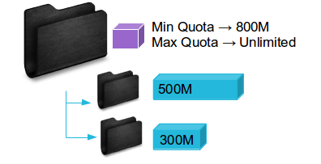
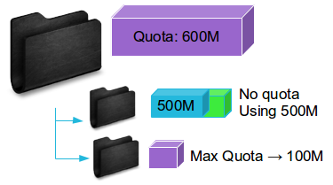
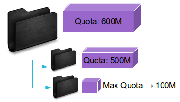

Managing quotas is a frequent need. Let's see how we can handle it the easy way.
###Nuxeo Quota Add-On
####Principles



- Add-on directly available from the Nuxeo marketplace
- Lets you define quotas on every Folderish document
- Quotas are inherited from their parent
- Quotas can be set on user workspaces, on a per user basis
###Nuxeo Quota Add-On
####UI usage
Step 1 - Install the add-on
Step 2 - Compute initial statistics about the existing docs
Step 3 - Set quotas
Quotas can be set:
From the admin center (for user workspaces)
From each folderish document
Rights needed
Quotas statistics can be seen by anyone with read access to a space
Quotas can be managed by users having "Manage Everything" right on a space